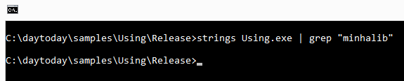
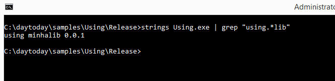
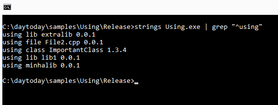

# Enquanto Somos Jovens
Caloni, 2015-07-03 <cinema> <movies> [up] [copy]Enquanto Somos Jovens mantém um roteiro tão bom e atuações tão alheias a isso (embora sempre interessantes) que suas falas parecem querer dizer muito mais ao espectador do que para seus próprios personagens. Ou talvez seja apenas a voz dentro da minha cabeça relembrando minha decisão atual de não ter filhos. Ainda é bom lembrar que, se a discussão central girasse em torno de ter ou não rebentos de carne-e-osso, essa seria uma das comédias que já conhecemos de Ben Stiller (com uma sempre inspirada Naomi Watts). Porém, ao mesclar o tema com filhos mais "autorais", como documentários, o filme enriquece ambos os lados, ainda que acabe envolvendo mais o segundo, já que seres humanos bebês são apenas uma desculpa para falar de algo mais importante.
O diretor (e roteirista) Noah Baumbach ficou conhecido pelo seu ótimo indie Frances Ha, uma história envolvendo atores, e nesse filme continua a permear o mundo da criação com Josh (Stiller), um cineasta de meia-idade que acredita na integridade da narrativa dos documentários, e que se perdeu por 10 anos acumulando mais de 100 horas de uma entrevista com um velho monótono em uma discussão complexa que não parece se encaixar em um filme acessível a algum tipo de público. Ele é casado com a adorável -- e igualmente preocupada com sua fase na vida -- Cornelia (Watts), e por isso ganha como brinde um sogro que é um documentarista que já pavimentou sua fama, motivo suficiente para Josh tentar trilhar o seu sem pedir ajuda (mas já sabemos disso, já que Stiller se especializou em papéis arrogantes em busca de aceitação).
O casal rediscute sua decisão de não ter filhos ao visitar um casal de amigos que acabou de serem pais, e rediscute sua rotina de casal já morna ao conhecer o jovem casal Jamie (Adam Driver) e Darby (Amanda Seyfried). Jamie filma tudo ao seu redor e parece se sentir à vontade com cada faceta de sua personalidade frenética (ele e a esposa assistem às aulas de Josh mesmo sem estar matriculados). Darby faz sorvete, o que pode virar um negócio por sugestão de Jamie (isso é importante notar). Ambos vivem em uma casa que parece homenagear uma época que Josh e Cornelia, apesar de terem vivenciado, hoje é algo distante para eles: discos de vinil, fitas VHS e livros "de verdade" (em vez de e-books); além disso, há sinais de uma vida ainda mais excitante do que imaginariam: uma mesa feita por seu próprio dono, ou experiências espirituais coletivas.
Enquanto isso, o casal mais velho é curiosamente mais prático, embora praticamente mais engessado. Utilizam o celular e tablet para tudo -- sendo o detalhe cômico a capa de celular de Josh: uma fita cassete -- , além de se vangloriarem de uma liberdade que parece puramente teórica, já que Josh e seu projeto de dez anos não parecem próximos do término, quase que berrando ao espectador que ter um filho pode ser limitante, mas qualquer projeto muito complexo acaba nos limitando a um estilo de vida por muito tempo.
Com um roteiro fluido que nos leva de um canto a outro de maneira dinâmica, enquanto acelera graciosamente no tempo com cortes rápidos conduzidos por uma trilha sonora balanceada, o tom da história é mais contemplativo, mas sempre de maneira visual, o que curiosamente remete a... documentários. O que ocorre nas sombras geralmente é o mais importante, enquanto o que vemos de frente é a fachada divertida, e apesar de que muitas comédias românticas passariam ilesas apenas com as partes divertidas desse filme, Enquanto Somos Jovens quer extrair mais de seu conteúdo, flertando como se fosse um filme de Woody Allen em um universo paralelo onde não existisse o medo da morte (ops, mas ela também é citada, pontualmente).
Com uma conclusão 15x mais madura do que qualquer ComRom que estrou ano passado, esse ano e os próximos cinco, Enquanto Somos Jovens representa uma mescla do divertido intelectual aliado à metalinguagem, já que aborda documentários como bebês de seus criadores. E se pensarmos mais a fundo, projetos de longo prazo quase não se diferenciam dessas criaturinhas semi-humanas: em nenhum dos dois não temos a mínima ideia onde isso vai parar.
# Sense8
Caloni, 2015-07-06 <cinema> <series> [up] [copy]Essa é uma série que tem todos os motivos de ser "acusada" de novela, no sentido da história estar totalmente focada nas reviravoltas amorosas de seus personagens. Mas o que dizer quando o destino amoroso do personagem X, Y e Z estão unidos de uma maneira tão fantástica que é impossível de disassociá-los e montar a velha tabela par romântico ou trio amoroso?
Curiosamente, existe um trio amoroso na história. E existe um drama familiar. Também existe um policial honesto, uma hacker "do bem", um assassino cruel, um casamento errado e a união de tudo isso através da música. Lírico demais essa descrição? Eu diria transcedental. Assim é o novo trabalho das irmãs Wachowski (A Viagem, Speed Racer, V de Vingança), que flertam tão bem com a novela quanto com a cena de ação, ou a luta de um contra todos, ou até a cena mais trivial de todas: o descanso no final do dia, em um por-do-sol compartihado de vários ângulos do planeta.
Curioso que falar apenas em por-do-sol não é suficiente em Sense8, uma série que contém protagonistas espalhados pela maioria dos continentes, falando inglês por todos os cantos. Claro que sabemos que essa é uma "licença poética", e que os personagens da Coreia do Sul, por exemplo, estão falando coreano entre si (embora para nós seja inglês, mesmo). Também sabemos que alguma lógica relacionada ao tempo de duração de um dia também deve ser relevado. Aliás, todos os detalhes da vida real parecem ter sido suspensos para dar vazão ao tema principal da história: alguns seres humanos possuem a capacidade de se conectar com o outro lado do mundo e mesmo assim conversar como se estivessem na mesma sala. Oito deles começam essa jornada.
Da lista de improbabilidades, estas oito pessoas estão espalhadas entre diferentes etnias, de lugares exóticos a cidades grandes. E quais as chances de entre oito pessoas escolhidas ao acaso duas serem gays? E de gêneros diferentes? E transgêneros? É óbvio que os trabalhos de de Lilly e Lana Wachowski, até desde o primeiro Matrix, é cercado de esoterismo, relacionamentos andrógenos (cujo gênero é o que menos importa) e descoberta da sexualidade. Elas são muito boas em escolher o casting dos seus trabalhos mais sexy, e deu vontade de vibrar em ver Mila Kunis em seu último filme, o médio O Destino de Júpiter (além de Donna Bae de Cloud Atlas ser um achado). Aqui não é diferente, mas com a sensação que há um filtro elegante e até atraente dos diretores em escolher a beleza que melhor se encaixa em cada personagem sem nunca apelar para as batidíssimas maquiagens que plastificam e idealizam a beleza photoshopada. O uso da luz em Sense8 atinge os personagens, o que é uma maneira sutil de dizer que eles não são inatingíveis, como muitos heróis dos tempos atuais nos parecem.
E já que estamos falando de beleza e sensualidade, o pacote Netflix, em que violência e sexo não são apenas desejados, mas liberados em qualquer momento da trama, coube muito bem no estilo dos diretores e sua equipe, e cenas como uma orgia que não conhece a noção de limite espacial não é apenas divertida pelo seu conceito, mas é um dos grandes momentos da cinematografia das duas, e mais uma memorável cena Netflixeana comparável ao escandaloso ménage em House of Cards (segunda temporada). Essa falta de limites, no entanto, pode ceder alguns exageros que são controversos. Não no sentido moral da coisa, mas no estético, mesmo, e ainda estou em dúvida se foi uma decisão acertada mostrar a vulva e todo o orifício de diferentes recém-nascidos. Talvez seja mais um problema de computação gráfica. Nesse caso a estética falou mais alto, e quase a série sai dos trilhos.
Porém, sair dos trilhos mesmo é algo que Sense8 não fez em nenhum dos seus primeiros doze episódios, e mesmo que não tivesse sido fantástico em todos eles (na verdade, quase nenhum), ele mantém uma coleção razoável de momentos memoráveis, muitos deles que merecem ser revistos. Uma pena que para rever, tenhamos que passar por tanta novela, por tanto embaraço e por tanto estica-estica. Sim, ele não é livre de defeitos. Eu diria que tem tantos defeitos quanto qualidades. Porém, pela ambição de suas qualidades, os defeitos ficam escondidos (com exceção da longa duração da experiência).
Ao final, a história, essa longa e quase irrelevante trama, não merece ser discutida. Escolha assistir Sense8 exatamente pelo que seu título sugere: sensações. Reflexões. Será que estamos mesmos conectados? Com um mundo onde a notícia atinge a velocidade da luz, não importa de qual aldeia indígena, a melhor pergunta seria: será que os humanos estão realmente desconectados como imaginam?
# TDC 2015 No More
Caloni, 2015-07-13 [up] [copy]Eu represento o Grupo C/C++ Brasil. Sou um dos fundadores. A bem da verdade, todos que participam ativamente no Google Groups e/ou ajudam a organizar o nosso saite, e/ou ajudam a fortalecer a presença de uma comunidade C/C++ no país representam, em menor ou maior grau, a esse ideal que é: as linguagens C e C++ ainda são muito úteis na programação de uso geral, em cenários tão distintos e tão variados que fica difícil sequer listar onde elas são usadas sem parecer panelinha.
Além de eu representar o grupo, eu seria um dos organizadores da Trilha C/C++ do TDC 2015 São Paulo desse ano. Seria, se as coisas não tivessem saído dos trilhos a partir desta thread, que colocou em xeque a presença da trilha.
Esse ano posso dizer que não há dúvidas: após a saída da organização de Rodrigo Strauss e de mim, a trilha foi oficialmente cancelada esse ano. Quem esperava assistir as palestras que foram disponibilizadas na grade sinto dizer que não acontecerão esse ano nesse evento. Podem acontecer em outro evento, nesse ou em outros anos? É capaz. O pessoal do Rio está fazendo um esforço admirável em montar nosso segundo encontro no ano, o que já é uma conquista e tanto para um grupo que peca às vezes pela parca frequência com que se reúne (talvez possamos resolver isso de forma mais informal através daqueles velhos papos de boteco que aconteceram algumas vezes no passado).
Bom, é isso. Espero encontrar alguns de vocês por lá. E espero que nos encontremos em Sampa com mais frequência ;)
# Corações de Ferro
Caloni, 2015-07-14 <cinema> <movies> [up] [copy]O que é o patriotismo senão uma outra forma de religião? Da mesma forma com que a igreja católica destroçava povos e arrancava suas almas, a mente de soldados norte-americanos cansados no final da segunda guerra nos revela em Corações de Ferro uma noção de que até atos de heroísmo estão manchados de sangue e uma moral no mínimo duvidosa. O estresse de ter matado (e muito) pode servir de desculpa, mas assim como em Sniper Americano, não por muito tempo.
Girando (literalmente) em torno de um tanque norte-americano que está em sua última missão de fazer render o resto do exército alemão, o sargento Don 'Wardaddy' Collier (Brad Pitt) comanda uma equipe de soldados que, realistas mas nem tanto, servem metaforicamente como a representação dos rumos de um EUA mais atual do que há meio século atrás. Talvez apenas alguns anos. A morte de um deles gera sua substituição por um novato de escritório (Logan Lerman), que vira nossos olhos leigos naquele mundo de assassinatos legalizados.
O passeio épico que o filme escrito e dirigido por David Ayer é floreado não apenas com sua câmera que exalta a grandiosidade do tanque em torno dos campos de batalha por onde passa, mas com uma trilha sonora igualmente grandiosa e temática, dividindo a experiência em fases de uma escalada "evolutiva" de um ser humano se transformando em um soldado, e que testa nossa percepção do que é humano quase a todo momento. Com uma fotografia e um ritmo invejáveis em todo o percurso, o sentimento geral é semelhante a Cidade de Deus e seus conflitos morais. Temos noção do que é necessário para vencer uma guerra, mas quase nunca sentimos nos filmes que as retratam como decisões são tomadas quase sempre com pouquíssimo tempo de reflexão e muito sangue quente correndo nas veias.
O personagem de Brad Pitt é o ser mais complexo da trama, cercado de atuações dignas de compartilharem esse espaço. Seus diálogos com o novato, o igualmente competente Logan Lerman, são admiráveis pela lógica e naturalidade com que são desenvolvidos, além da inserção progressiva de uma relação pai/filho que parece quase sempre fazer sentido. O tempo do filme é curto para tanto, mas há vários e tensos episódios, grudados um no outro, que são suficiente para essa visão acelerada de como as coisas funcionam.
Pecando talvez por simplificar a questão de homens lutando (e matando) juntos por muito tempo, submete o filme à prova em um momento crucial que se passa debaixo do tanque, e que parece ter sido o motivo de todo o filme. Se o "patriotismo" que muitos exaltam já não estivesse devidamente surrado no filme de Ayer, aqui ele recebe um golpe de misericórdia complexo e memorável.
# Lady Vingança
Caloni, 2015-07-14 <cinema> <movies> [up] [copy]Lady Vingança é o terceiro filme de Chan-wook Park sobre... adivinha? Claro, a vingança, esse ato que já virou tema de filmes excelentes -- Kill Bill Vol 1 e 2, Old Boy, do próprio Chan-wook -- e outros igualmente admiráveis -- Mr. Vingança, primeiro do Chan-wook, Lady Snowblood, inspiração do Tarantino para Kill Bill. Tão ou mais estilizado que Old Boy, sua obra mais conhecida no ocidente, a narrativa de Lady Vingança possui a beleza da fluidez incessante e dos recortes cartunescos, mas ao mesmo tempo traz uma certa petulância em ser excessivamente complexo apenas pela capacidade de ser (o famoso "porque sim").
Assim como os dois filmes anteriores do diretor sobre o tema, a história aqui também envolve sequestro, morte de criança, extorsão, prisão e cumprimento de pena. Diferente dos outros dois, há uma interconexão empolgante entre as presas que compartilharam a mesma cela e suas versões livres. Ao apresentar cada uma delas, o filme faz questão de exibir o tempo que cada uma cumpriu pena, como uma maneira de entender a difícil cronologia dos fatos que combinam para o plano de vingança de Geum-ja Lee (Yeong-ae Lee), cuja pena maior de 13 anos foi usada para arquitetar a solução perfeita de seus anseios de justiça. Além desse passatempo, é curioso entender como cada uma de suas colegas se tornaram praticamente irmãs de sangue. Não tão inspiradas são as origens de cada uma, pois ainda que fosse interessante do ponto de vista do próprio tema do filme, a complexidade da narrativa faz com que nos percamos facilmente na própria linha de raciocínio da heroína. Quem dirá de todas as envolvidas.
Toda a complexidade que torna a obra um tanto hermenêutica ganha uma fluidez admirável entre as cenas e as idas e vindas no tempo através de recortes animados, seja em sonho ou como reflexo da própria narrativa de uma pessoa oculta durante todo o momento (e sequer sabemos se participa da história até certo momento). Além disso, inicialmente pintada pela mídia e por um certo padre como uma imagem angelical ao ser presa por homicídio infantil com pouca idade e sem noção de seu ato, após os 13 anos da prisão é descrito por todos que a reveem como uma outra pessoa. Uma reviravolta no meio do filme muda um pouco o ângulo das coisas, e a história ganha mais complexidade com menos diálogos.
Porém, mesmo que suas virtudes até aqui não sirvam de um bom pretexto para assistir ao filme, posso afirmar que, assim como Old Boy, existe uma reviravolta maior no terceiro ato bem no estilo bombástica sem precisar ser apelativa, e a condução dessa novidade se torna a melhor parte do filme, tão visceral quanto o próprio personagem de Min-sik Choi atormentado do filme anterior.
Contudo, tentando conduzir seu raciocínio pelos mesmos caminhos de Mr. Vingança, onde o mal não compensa, essa forte estrutura final perde um pouco de sua trama nos segundos finais, embora jamais prejudique um filme que certamente possui muito mais virtudes que defeitos.
# Um Agente em Apuros
Caloni, 2015-07-14 <cinema> <movies> [up] [copy]Essa é comédia britânica estilo anos 80, mas foi filmada em 2001. Passou no SBT (TV aberta) essas noites, por conta do falecimento de Omar Shariff esse mês. Shariff participa pontualmente, pois o "astro" é Steve Coogan, quase um sócia de Steve Carrel, mas que depende mais de gags. Coogan, pode-se dizer, manda bem.
A história é de um agente da condicional que testemunha um assassinato em que a polícia está envolvida. Sabendo da existência de uma fita que gravou todo o ocorrido, parte em busca dela, que foi guardada em um cofre de um banco (hein?) pela gangue de bandidos. Para conseguir reavê-la forma uma equipe com todos os criminosos que conseguiu "reabilitar": meia-dúzia. Conta também com a ajuda de uma policial bonitona que obviamente é o interesse romântico do nosso herói.
Esse é um filme no estilo piadas vem e vão, mas o contexto se mantém no aceitável. Há algo de interessante em acompanhar toda a estratégia do grupo, mas algo ingênuo em suas atitudes. Porém, desconfio que seja essa mesma atitude que faz com que o humor funcione. Sem lições de moral, com gostinho de paródia, um RED: Aposentados e Perigosos um pouco mais coeso, embora quase tão facilmente esquecível.
# X-Men: O Filme
Caloni, 2015-07-16 <cinema> <movies> [up] [copy]"X-Men: o Filme" é um dos primeiros trabalhos de fantasia que volta a explorar super-heróis verossímeis, no sentido de respeitá-los como seres complexos envoltos em um universo onde sua existência não apenas é possível, mas moldada por ela. Dessa forma, ele faz o gancho com os quase esquecidos "Superman: o Filme" e "Superman: a Aventura Continua" e ainda nos apresenta uma aventura onde existe uma penca deles, conseguindo fazer com que tudo tivesse não apenas um sentido direto, mas simbólico.
É por isso que o filme escrito por Tom DeSanto, David Hayter e Bryan Singer (este último o que dirige) começa na Alemanha nazista da segunda guerra, onde vemos um garoto se separar de sua mãe e estranhamente parecer ter o poder de mover as grades de um portão através do seu estado emocional abalado. Avançando rapidamente no tempo, descobrimos que "em um futuro não muito distante" há outras pessoas dotadas de habilidades sobrenaturais, são chamados de mutantes e estão sob os olhos da temerosa sociedade norte-americana, que quer garantir através de uma proposta de lei que essas abominações tenham sua identidade cadastrada (e pública) e suas localizações monitoradas. Não que os judeus sejam tão diferentes a ponto de termos medo, mas o paralelo mais do que óbvio não é entre judeus e mutantes, mas muito mais entre ambas as sociedades, o que está bem longe de uma mensagem de esperança.
Rapidamente também aprendemos que a maioria dos mutantes teme pela sua vida (pelos motivos já apontados) e esconde suas habilidades, mas há pelo menos dois grupos que se organizaram em torno de uma causa: proteção. Enquanto um grupo, liderado pelo Professor Charles Xavier (Patrick Stewart), defende uma solução mais amigável e pacífica com os humanos ou não-mutantes (ou os donos do poder), um outro grupo liderado por Eric Lensherr (Ian McKellen), ou Magneto, acredita que tudo isso é uma ilusão, em breve todos serão caçados e a única saída é iniciar um confronto o quanto antes. Magneto é o garotinho judeu do início do filme. Essa informação é vital para que, mesmo que não simpatizemos, pelo menos entendamos suas ressalvas com a humanidade, e os mais radicais até podem torcer pelos seus métodos.
Dessa forma, "X-Men: o Filme" está muito longe daquela fórmula maniqueísta de "bem vs mal", já que tudo é uma questão de ponto de vista. Ainda assim, realiza um ótimo trabalho em demonstrar como alguma atitudes, embora vestidas de nobre, soam covarde sob o escrutínio lógico. É assim que Wolverine (Hugh Jackman), o X-Men mais complexo, consegue desmascarar os planos de Magneto, que além de covarde é hipócrita.
Iniciando uma franquia de maneira satisfatória, já que de certa forma consegue concluir a trama principal sem ficar prometendo filmes melhor resolvidos para depois (um pecado comum nas produções da Marvel), o filme de Bryan Singer pode até ser acusado de infantil, já que usa a fantasia em excesso para não fazer perder suas referências nos quadrinhos. Porém, se isso é de fato uma acusação, acusemos também o primeiro Star Wars, Indiana Jones e até E.T. Indo mais além, até "Superman: o Filme", mesmo épico, é um filme de criança. Torçamos, então, para que todos os filmes de criança permitam a entrada de adultos na sala de exibição.
# A Nação Que Não Esperou Por Deus
Caloni, 2015-07-18 <cinemaqui> <cinema> <movies> [up] [copy]Tudo começou em 1999, quando Lúcia Murat escreveu, produziu e dirigiu o filme "Brava Gente Brasileira", que retrata a conturbada relação entre portugueses e índios no século XVIII, justamente a tribo dos Cadiueus (há outros nomes, como Kadiweu, Kadivéus e por aí vai a valsa). Agora a mesma diretora retoma uma jornada de redescoberta de um povo que quinze anos depois de "descobrir" a eletricidade, as novelas e a religião dos brancos, agora corre o risco de perder o último de seus resquícios palpáveis em sua sociedade: a terra.
Essa tribo ficou conhecida em nossa história por ser guerreira e hábeis montadores de cavalos. Foram aliados na guerra do Brasil contra o Paraguai, e por isso mesmo tiveram suas terras oficialmente reconhecidas pela União. Curioso se torna quando descobrimos que na vida real, os Cadiueus sofrem forte assédio dos fazendeiros por suas terras, isso sem contar a parte delas onde a gente branca já se apossou, que exigiu da tribo movimentos conhecidos como "retomada": o repovoamento de suas terras originais.
Iniciando com a explicação do título, uma lenda adaptada depois da descoberta pelos índios de outros povos onde eles, os Cadiueus, resolveram não esperar pelas ferramentas que deus iria distribuir entre os povos, preferindo herdar as terras que tudo lhe dão, tudo isso se torna irônico nos dias de hoje, com os índios se convertendo à religião evangélica. E é a religião a que mais escancara essa realidade mista em que eles vivem. O seu culto é adaptado, com construções em português suportando frases nativas. As etnias estão misturadas, e seus filhos, brancos e falantes do idioma nativo, apesar de mal vistos, representam com perfeição a evolução da tribo desde sua representante mais antiga. Esta ganha uma curta sequência: uma senhora de olhar profundo e reflexivo, um tanto melancólico, vestindo um gorro onde se lê "Brasil", sendo levada por um representante urbanoide através de plantas que se mesclam com o cimento de um jardim por dentro de uma pequena porta escura. E mesmo curta, essa parece ser a imagem que melhor representa todas as contradições integradas em um povo que luta por seus direitos por uma cultura que obviamente nunca mais será a mesma.
A questão dos Cadiueus é tão díspare em comparação com as tribos da reserva Xingu que seu início de mostra conturbado, difícil de raciocinar em cima, e o filme também comete seus pecadilhos mais nessa parte, ao não suportar um significado palpável que torne as passagens em corte brusco mais palatáveis (talvez uma revisita conserte isso para o espectador, mas não para o filme). E o que são aqueles índios de calça jeans e tênis? Seus crânios de mandíbulas longas e os sulcos das faces mais velhas revelam sua origem, mas o discurso político esquerdista e os conflitos de propriedade com fazendeiros também revelam que essa briga já foi perdida. Eles podem ter esperança, mas nós, homens brancos brasileiros, já sabemos que o desfecho já foi definido gerações atrás, e não há qualquer expectativa de mudança, não importa que agora estejam dispostos a esperar pelo deus evangélico. Ele só atende as preces do que estão no poder. Como Lúcia Murat parafraseia o antropologista Lévi-Strauss, ela sente ser uma das últimas a testemunhas a existência dessa fabulosa sociedade. O "arrebatamento" dos evangélicos parece ter ocorrido ao contrário para eles, que viviam no paraíso, e agora estão sob as leis escusas de uma civilização inerentemente exploratória e devastadora.
Mesclando imagens atuais com arquivos bem mais antigos -- uma das melhores ideias e fruto das melhores sequências -- como quando é descrita uma das ações de "retomadas" das terras indígenas em posse de fazendeiros, o filme nos faz viajar pelo tempo e pela imaginação, já que os Cadiueus são meros personagens em Brava Gente Brasileira, mas estão muito mais próximos de sua alma autêntica do que hoje, na vida real, em um documentário. Mais curioso ainda é constatar que as imagens antigas, pela pouca qualidade e definição, lembram muito mais um documentário do que as imagens atuais, em uma inversão que apenas beneficia a narrativa.
E como se não bastasse, seu desfecho, já nos letreiros finais, flerta fortemente com outro trabalho inestimável dos documentaristas tupiniquins: muitos enxergarão Cabra Marcado Para Morrer, de Eduardo Coutinho, reproduzido em uma nova embalagem. Não é tão impactante quando o longa de Coutinho, mas o conteúdo está ali, para todos poderem ver. Apenas isso já serviria como um bom motivo para todos assistirem esse teatro da vida real.
# A Espuma dos Dias
Caloni, 2015-07-20 <cinema> <movies> [up] [copy]Imagine que o mundo real foi invadido pela física (e a lógica) dos desenhos de animação no seu sentido mais bucólico. Onde a paixão é o suficiente para desenrolar qualquer novo relacionamento, e a dança é o suficiente para alterar as paredes de um quarto. Imagine, enfim, que estamos em um filme completamente tomado pelas loucuras inventivas de Michel Gondry.
Gondry, para quem não lembra, foi o diretor de Brilho Eterno de uma Mente Sem Lembranças, um filme onde Jim Carrey e Kate Winslet entram nas memórias de infância para esconder a lembrança do que sentem um pelo outro. O diretor também fez uma merecida homenagem aos efeitos de trucagens que tanto venera em "Rebobine, Por Favor", onde cenas icônicas de filmes clássicos -- como 2001 -- são refeitas com o uso de técnicas amadorísticas de fundo de garagem. Esses dois exemplos agora lembram meros aquecimentos para o que viria em A Espuma dos Dias, um mundo inteiro criado através das tais trucagens, que parece evitar ao máximo o uso do digital, não como um desafio, mas como uma abordagem apaixonada do Cinema de mentirinha, algo que levaria às lágrimas o pai dos efeitos no Cinema, Georges Méliès.
Com essa abordagem de Moulin Rouge nos Tempos da Brilhantina, ninguém melhor para fazer o par romântico do que a namoradinha da França: Amélie Poulain... quero dizer, Audrey Tautou. Junto de um elenco que abraça o impossível com o maior prazer -- incluindo Romain Duris (Bonecas Russas), Gad Elmaleh (Meia-Noite em Paris) e Omar Sy (Intocáveis).
# Sem Segurança Nenhuma
Caloni, 2015-07-20 <cinema> <movies> [up] [copy]Até que não incomoda tanto o fato de Sem Segurança Nenhuma não se esforçar para sair de sua própria mediocridade, pois é possível constatar durante todo o trajeto guiado pela tensão de sua premissa inicial (a viagem no tempo) que há algo de agradável em sua eloquência, mesmo que seus personagens sejam batidos, suas histórias sejam clichês e suas piadas, assim como o melancólico Regular Show, tenham viajado para o presente direto dos anos 80.
Porém, se eu mencionei a tal viagem no tempo, não fique tão entusiasmado: ela é apenas o gancho da história de uma estagiária (Aubrey Plaza) tentando sair de sua vidinha ridícula, assim como seu chefe (Jake Johnson) e seu colega indiano (Karan Soni). Juntos irão para uma cidadezinha investigar o caso de um anúncio no jornal local de um maluco (Mark Duplass) que diz que está recrutando voluntários para sua viagem para o passado. Anexo ao texto ele adverte: traga sua própria arma.
Sempre se utilizando como suporte dramático da dúvida cruel se o maluco está ou não falando sério a respeito da máquina do tempo, o roteirista Derek Connolly (Jurassic World: O Mundo dos Dinossauros) nos mantém com essa dúvida por todo o trajeto, enquanto tenta desenvolver melhor seus personagens. As atuações tornam tudo uma comédia de situações morna, e Aubrey Plaza é a mais morna de todos. Repetindo suas caras e bocas da série em que ficou conhecida -- Parks and Recreation -- Plaza é incapaz de sugerir qualquer emoção, mesmo quando fala sobre a morte de sua mãe. Enquanto isso, Mark Duplass se sai muito melhor que o elenco, onde o "muito melhor" é conseguir convencer que seu Kenneth é uma pessoa amargurada pelas decisões do passado a ponto de dedicar toda sua vida a querer fugir do presente da maneira menos convencional possível.
Quem também brilha são o diretor Colin Trevorrow (também de Jurassic World) e seus editores Joe Landauer e Franklin Peterson, que têm a proeza de manter interessante uma produção obviamente de baixo orçamento e baseada mais em diálogos do que ações, ainda que esses diálogos sejam ditos sempre em movimento (uma ideia eficiente). Além disso, os diferente ângulos e os cortes rápidos mantém o sentimento de urgência da situação, pois Kenneth pretende "zarpar" em breve, e a dúvida do espectador de se tudo aquilo é verdade parece escorregar por entre os dedos a todo o momento.
Como eu disse, Sem Segurança Nenhuma não é nenhuma obra-prima, pois está baseada em uma história "nada demais". No entanto, seus esforços em tornar tudo aquilo muito mais do que uma experiência vazia são dignos de nota. Os criadores do filme podem dormir em paz, sem desejar voltar no tempo para a sala de edição.
# Pixels
Caloni, 2015-07-21 <cinemaqui> <cinema> <movies> [up] [copy]Alguém aqui sabe o que quer dizer a palavra pixel? Bom, meu histórico em programação de computadores me permite conhecer este e outros termos nerds em detalhes, mas se você acha que irá obter seu significado assistindo ao novo filme de Adam Sandler assinado por Chris Columbus, não perca seu tempo. Porém, se você gosta de histórias simplistas que apesar de simplistas não se justificam, uma ou outra sequência de ação que não te fará temer pelos personagens, mas que em compensação é levemente divertida ou engraçadinha, e, por fim, um ou outro efeito visual que sob a ótica "Transformers" de enxergar a realidade é só o que importa nessa vida, Pixels é justamente o que você precisa. E aos megabytes.
Com uma introdução e uma música empolgadas estilo anos 80, Pixels conta a história de amigos de infância que jogavam fliperama depois da escola, entre eles Brenner (Anthony Ippolito, no futuro Adam Sandler), um garoto que consegue enxergar o padrão dos jogos eletrônicos e com isso bater os maiores recordes nas máquinas. Quando ele participa do primeiro campeonato de video-games em 1982, duas coisas acontecem: ele perde para o insuportável e magnético Eddie (Peter Dinklage, da série Game of Thrones) e a NASA aparentemente resolve enviar uma sonda para o espaço apenas com os vídeos do tal campeonato, já que o resultado anos depois, com todos já adultos, é uma invasão alienígena de versões monstruosas dos famosos arcades da época.
A despeito do entusiasmo natural de assistir a versões megalomaníacas do que eram apenas joguinhos de computador, é difícil se desvencilhar da ideia de que esses aliens parecem estúpidos na razão inversamente proporcional à sua tecnologia, já que nos presenteiam -- e é esse o termo -- com uma guerra em arcade 3D criada usando as regras dos jogos filmados e nos dão a chance de competir para ganhar a melhor de três. Vou repetir de outra forma para fazer "cair a ficha" novamente: recursos foram usados por uma raça alienígena para criar um sistema totalmente baseado em imagens capturadas de outro planeta de crianças jogando. E uma viagem interplanetária. OK, talvez eles não saibam que aquelas criaturas eram crianças, de qualquer forma.
Mas, convenhamos: este filme dilacerou toda a lógica que emprestou de um conceito fascinante nascido do engenhoso curta de Patrick Jean (nos créditos do roteiro) para mais uma fórmula batida dos filmes de Sandler e seus inúmeros amigos, que preenchem as vagas do resto do elenco. Pior: descartou completamente boas ideias no curta de dois minutos e aplicou um ou dois conceitos sobre pixelar objetos e pessoas. O resultado foi que os personagens já vieram pixelados de fábrica.
Isso com certeza se aplica, por exemplo, a Kevin James, em que Sandler consegue transformar o Segurança de Shopping em presidente dos Estados Unidos (não que isso não seja engraçado, pelo menos nos primeiros quinze segundos, mas que depois acaba virando apenas a muleta do roteiro para explicar a facilidade de acesso dos heróis contra os brinquedos eletrônicos). De maneira similar, Josh Gad é engraçado apesar do roteiro que o coloca como um lunático colecionador de teorias conspiratórias e fonte de piadas gays, mesmo sendo apaixonado desde a infância por Lady Lisa, a heroína desprovida de roupas longas do jogo Dojo Quest. A exceção parece ficar por conta de Peter Dinklage, que como de praxe diverte e se diverte. Isso sem contar que Michelle Monaghan está disposta a se especializar em rostinho bonito e par-romântico para todo filme.
O mais curioso, no entanto, é tentar conseguir entender em como uma ameaça ao planeta consegue divertir tanto essas pessoas, já que o fato de haver um ataque iminente e de vidas humanas estarem em risco não parece fazer a mínima diferença na história, e consequentemente em nós. Aliás, quem se importa com a lógica, já que o interesse amoroso de Sandler era sua cliente ocasional e coincidentemente também uma tenente-coronel que responde diretamente à Casa Branca?
Mas e os efeitos? Sim, eles são bons. Porém, vazios de significado, empalidecem, e por mais que vejamos a conexão entre Tetris e os andares de um prédio, ou Pac Man e as ruas de Nova York (tão óbvio), não é possível entender a narrativa senão como um saudosismo exdrúxulo somado à necessidade de Sandler de encher o seu ego -- e o de seus fãs -- mais uma vez. Talvez a maior virtude não fosse nem nos efeitos em si, mas da produção do filme em conseguir reunir tantas licenças de uso de personagens, mas nem isso parece bem aproveitado, pois a maioria das sequências não conseguimos sequer discernir quem é quem. Detona Ralph conseguiu a façanha de criar um jogo que nos faz lembrar dos clássicos. Pixels foi além, e conseguiu todos os clássicos e arrancou deles os que o tornavam especiais.
# O Conto da Princesa Kaguya
Caloni, 2015-07-26 <cinema> <movies> [up] [copy]Uma aventura narrada por traços que revelam o que mais importa em seus personagens: o "eu" interior, ou seja, as expressões que os tornam tão únicos quanto complexos. Porém, nunca simplificados, mesmo se tratando de um conto. Aliado a isso, uma música de poucos toques usada nos momentos exatos transforma a experiência em uma imersão completa na moral milenar oriental. Em suma: um desenho imperdível para adultos (e talvez assustador para crianças, mas ainda assim arriscaria levá-las...).
Contando a história da pequena Princesa Kaguya do filme, encontrada próximo a um bambu iluminado justamente por um cortador de bambu, o bebê mágico cresce rapidamente, e junto com ele acompanhamos os momentos mais interessantes do próprio crescimento humano. A felicidade completa está contida na primeira parte da história, onde Kaguya e seus amigos correm e se divertem juntos em um ambiente rural que exala natureza e contato do ser humano com sua essência animal.
Equilibrando com destreza suas metáforas a respeito de nossa vida e o quanto perdemos dessa essência durante o crescimento, a fase no palácio é comparativamente sombria e sem sentido, e é assim que o diretor Isao Takahata (do igualmente profundo Túmulo dos Vagalumes) quer que vejamos essa transição e pensemos se toda essa pomposidade em nossa sociedade realmente faz valer a pena o sacrifício. A época em que a história se passa apenas aguça essa visão, já que Kaguya, depois de oficializada princesa em uma grande festa, é alvo de uma dúzia de pretendentes que nunca a viram, mas que estão dispostos a se casar com ela unicamente para possui-la como um objeto.
A felicidade é o tema recorrente em O Conto da Princesa Kaguya, como vemos o seu pai constantemente pensando na melhor forma de tornar a filha feliz. Se para nós é óbvio como espectadores, a maior virtude do filme seria fazer-nos pensar a respeito de nossa própria vida.
Com um final deslumbrante que conta com cada segundo de música e movimento, a visão budista da partida não se torna religiosa justamente pela mensagem universal que ecoa em sua sequência. Um filme para ver e rever com o passar da idade. Parece longo, como a vida, mas passa em alguns segundos, como o crescimento de uma princesa.
# Existem programadores C/C++ no Rio de Janeiro?
Caloni, 2015-07-27 <ccppbr> [up] [copy]Essa pergunta eu só vou conseguir saber quando chegar lá. Eu sei que existem pelo menos dois: Pedro Lamarão e André Tupinambá. Lamarão foi um dos fundadores do grupo e vem continuamente em São Paulo para nossos eventos, e agora está organizando o 12° Encontro de Programadores C & C++ do Brasil na Cidade Maravilhosa. Eu irei e palestrarei, mas espero encontrar mais programadores e palestras por lá e trocar um pouco de conhecimento.
E aí, existem ou não existem programadores C/C++ no Rio de Janeiro?
# Técnicas antidebugging no TDC 2015
Caloni, 2015-07-27 <antidebug> <blogging> [up] [copy]Esse fim-de-semana, quer dizer, contando com a sexta-feira (dia 24/07/2015), tivemos a trilha de segurança no TDC 2015, e eu palestrei pela segunda vez, dessa vez com um material mais antigo ainda, mas que parece ter agradado alguns: técnicas antidebugging.
O que vocês acham de uma versão em áudio? Tenho algumas anotações que costumo fazer para treinar, mas não sei até quando uma palestra no estilo vídeo com áudio poderá agradar. Os que tiverem interesse, por favor, se manifestem, para eu ter algum ânimo de usar minha voz =)
# Derek
Caloni, 2015-07-28 <cinema> <series> [up] [copy]Derek é uma série britânica dirigida e roteirizada e protagonizada pelo comediante Ricky Gervais. Seu personagem é a espinha dorsal e moral de um lar para idosos orquestrado pela perseverante Hanna (Kerry Godliman). A câmera trabalha da mesma forma com que seu trabalho em The Office (o britânico original), como se estivessem filmando um documentário e mesmo assim as pessoas fossem elas mesmas. É um formato popular, também usado em Parks and Recreation e copiado no The Office americano. Possui no momento apenas uma temporada com seis episódios de 20 minutos cada, o que no fundo dá um filme de duas horas.
E é um dos seriados mais fofos atualmente.
A criação de personagens secundários facilita o uso de Derek em praticamente todas as situações das histórias sem torná-lo um protagonista no sentido nato da coisa. Não é ele que resolve todos os problemas, nem o que move a ação, mas é o que entrega sua dedicação em alma e coração. Porém, as pessoas em volta possuem cada uma delas uma visão do mundo que é complementar e que forma um pequeno universo que explica boa parte da nossa sociedade do lado de fora.
Não que seja um estudo denso e complexo de personagens, longe disso. Porém, dentro daquelas histórias, que com certeza vão te fazer rir e chorar, existe algo a mais que nos faz pensar a respeito de coisas que ocorrem de fato estão bem próximas dos diálogos e cenas do seriado. Talvez a única diferença com o mundo real é que elas não estão sendo filmadas.
O objetivo da série na primeira temporada não era entrar a fundo no estudo de seus personagens, mas a segunda temporada dá liberdade a Rick Gervais de fazer justamente isso: já sabemos quem são aquelas pessoas, agora vamos explorar um pouco mais o que elas podem se tornar, ou o que nunca deixarão de ser.
Por isso que o alcoolismo de Kev (personagem de David Earl) e o utilitarismo do novato Geoff (Colin Hoult) são pauta em um ou mais episódios, além da relação de Derek com o pai. Podemos dizer, sim, que isso constitui uma sutil, cômica e tocante análise de personagens daquele asilo, mas também no final de cada historieta conseguimos entender -- assim como nos episódios originais -- que aquelas pessoas não representam apenas elas naquele momento, mas são símbolos de comportamento humano que podemos ver em qualquer lugar. Basta abrir os olhos e desgrudá-los do seu celular.
Não se dedicando mais ao choro e ao riso fáceis, Derek mais uma vez prova ser um seriado essencial hoje em dia, onde perdemos cada vez mais nossa humanidade, nem sempre para o utilitarismo de Geoff, nem sempre por causa do alcoolismo usado para esquecer a chatice das pessoas, mas muitas vezes nos relacionamentos tecnológicos, nas redes sociais, nos fóruns onde é fácil e barato ofender um avatar qualquer que discorda de você em uma discussão muitas vezes inútil.
A câmera do ator/diretor/roteirista Derek navega naturalmente, e as falas soam cada vez mais humanas. Se torna um tanto estranho enxergar a nós mesmos naquelas pessoas que geralmente não teriam nada a ver com nossas vidas. Mais uma prova de que os seres humanos estão cada vez mais iguais, ou procurando as mesmas coisas, embora fiquemos cada vez mais enclausurados olhando insistentemente para a atualização de nosso perfil virtual, imaginário e, mais do que a vida real: efêmero.
# Family Guy
Caloni, 2015-07-28 <cinema> <series> [up] [copy]Depois de mais de 10 anos de sucesso, o sempre interessante Seth MacFarlane (Ted) insiste em piadas sobre eventos passados dos seus personagens, brincadeiras metalinguísticas e regionalismos durante quase todo o tempo. Talvez essa seja a eterna questão da série que já acumula treze temporadas e continua se autorreciclando em altos e baixos.
O fato de apelar para sexo, violência explícita e dark comedy apenas enfatiza a "escassez" desse material em programas live-action, fruto de uma autocensura crônica da sociedade estadunidense, apesar de nunca explorar esses temas de maneira verdadeiramente libertária como South Park. Mesmo assim, sua grande vantagem reside exatamente nesse jogo de aproximação e distanciamento do live action, onde nos identificamos com programas do gênero conduzidos com atores de carne-e-osso para depois convenientemente subvertê-los.
# Homem-Aranha
Caloni, 2015-07-28 <cinema> <movies> [up] [copy]Construído como um clássico fortemente inspirado em Super-Homem de Richard Donner, o debut de Sam Raimi peca por imitação enquanto acerta em todo o resto. "Com grande poder vem grandes responsabilidades" diz menos sobre o garoto picado por uma aranha e mais sobre o homem que o dirige.
Lançado há mais de 13 anos, a estreia de super-heróis solos (antes houve os X-Men) veio com um formato ainda a ser polido. Porém, o drama dos personagens, esse que falta tanto hoje em dia, esse é o que mais faz sentido e o que é mais explorado. Uma pena, portanto, que os atores não estejam em sua melhor forma. Tobey Maguire é a persona corretíssima para o papel, mas apenas com sua cara de tolo e não para todo o resto (como o drama de ter perdido o tio em uma obra do destino). Kirsten Dunst é a namoradinha da América em uma versão toda errada, mas não se consegue encontrar humor em sua personalidade. James Franco, o pior ontem hoje e sempre, pelo menos cumpre seu papel de acordo: como apenas uma sombra de seu pai, Norman Osborn, um Willem Dafoe que comprou o espírito da coisa nos mesmos moldes do caricato Gene Hackman como o vilão Lex Luthor no primeiro homem-de-aço, lá nos idos dos anos 80.
Todo início de herói é meio capenga, e esse não é diferente. Visto com empolgação pela primeira vez na telona, na revisão vemos que aquele efeito tão empolgante não passava de uma marca do passado já com data de fabricação (e validade). Pelo menos o dilema apresentado pelo Duende Verde, segurando duas coisas valiosas para nosso amigo da vizinhança Peter Parker, ainda é incômodo e faz pesar como deveria para alguém que aprendeu a duras penas que "com grande poder vem grandes responsabilidades".
Homem-Aranha é um trabalho irregular e datado? OK, podemos chamá-lo assim. Da mesma forma foi com Super-Homem, e assim será com qualquer outro que precisar reabrir a caixa mágica de Pandora dos deuses modernos mais uma vez no Cinema. Talvez a caixa se feche frente à aparente inescapável falta de criatividade e esgotamento de fórmulas na bilheteria. Talvez Birdman não estivesse tão prepotente em suas discussões pseudo-filosóficas a respeito do valor da arte. Talvez. Por enquanto, vale a pena colocar uma manteiguinha nessa pipoca e lambuzar os óculos 3D. Nem que seja por um ou dois blockbusters anuais.
# Hype da Cultura Nerd em Sesc Santos
Caloni, 2015-07-28 [up] [copy]Meu primeiro debate sobre Cinema =). Esse sábado estarei no Sesc Santos para prestigiar a sétima arte em um debate mais que atual: O hype da cultura nerd/geek.
Espero estar à altura do tema e do evento. De qualquer forma, sempre é bom falar sobre Cinema ;)
# Louie
Caloni, 2015-07-28 <cinema> <series> [up] [copy]O comediante, diretor, roteirista, ator Louis C. K. já protagonizou diferentes shows de stand up comedy e é um veterano no assunto. Talvez veterano seja dizer pouco: o cara é simplesmente fodástico na arte do humor. É uma das referências do gênero, e após a morte do mestre (que deus não o tenha) George Carlin, talvez Louis seja o melhor comediante norte-americano da atualidade.
Além de já realizar algumas pontas no cinema (inclusive num dos últimos filmes do Woody Allen, Blue Jasmine) e em séries (Parks and Recreation) ele resolve estrear sua própria série de comédia baseada em sua persona artística (pai de duas filhas divorciado com mais de 40 que faz comédia para sobreviver). Isso poderia ser um tiro no próprio pé, já que tão bem estabelecido no formato de bar, por que tentar estender essa experiência fora dos palcos e arriscar colocar tudo a perder?
Bem, ainda bem que existem pessoas que arriscam nesse mundo, já que a primeira temporada de Louie consegue rivalizar com séries escrachadas e inteligentes, como I.T. Crowd ou The Office e Community. Aproveita-se do formato antigo e o expande de maneira surreal. Se seus causos em palco são hilários per se, a realização destes na "vida real" é o que podemos chamar de Kaufmanização (do roteirista de cinema Charlie Kaufman) do drama cômico.
# Regular Show
Caloni, 2015-07-28 <cinema> <series> [up] [copy]Regular Show consegue contar seus episódios em apenas dez minutos. Isso em uma história quase sempre dotada de uma criatividade sem limites onde figuras impossíveis surgem para completar as piadas com o toque final do absurdo necessário para arrematar histórias com esse tom. Confuso, mas é sempre assim.
Parece ser comum hoje em dia as animações preferirem vender para a TV vinte ou até mais minutos de uma experiência inchada. O público não se importa, e várias produções parecem se sentir merecedoras de ocupar nossos minutos raros dedicados ao entretenimento com repetições baratas de músicas e enredos. No caso do Regular Show, eles simplesmente parecem querer evitar a antipatia que se ganha depois de executar o mesmo roteiro dezenas (ou centenas) de vezes.
Criado por J.G. Quintel (que dubla Mordecai) a série narra as aventuras de dois amigos inseparáveis: Mordecai, um pássaro azul, e Rigby, um guaxinim. Rigby quase sempre se mete em confusões que não apenas Mordecai acaba participando, mas todos seus outros amigos e colegas que trabalham em um parque. Não há limites para os problemas (e as soluções) que eles se metem, e geralmente estão intimamente relacionados com a teimosia e o orgulho do pequeno guaxinim.
Fora os roteiros criativos e as sequências enxutas (eu falei que cada episódio tem dez minutos?) quem rouba a cena é a dublagem de William Salyers como Rigby, que a cada nova história parece criar nuances diferentes de seu exaltado alterego animal.
E tudo isso em apenas dez minutos.
# South Park
Caloni, 2015-07-28 <cinema> <series> [up] [copy]Comecei assistindo essa animação já "decanária" (10 anos?) recentemente através das temporadas disponíveis na Netflix brasileira. O resultado foi um entusiasmo tão grande e egoísta que praticamente parei o meu ritmo frenético de filmes para reservar boa parte dos meus fins de semana e noites para ir até o último capítulo disponível da versão dublada em português. Posso dizer que aprendi muito sobre a vida, o mundo, a sociedade, e mim mesmo. Cada episódio polêmico me fazia ler os detalhes sórdidos através da Wikipedia, como o clássico Trapped in the Closed, que praticamente me obrigou a rever o "episódio de despedida" de Isaac Hayes em sua versão original, um recorte hilário de dublagens passadas do ator/cantor.
No entanto, seria injusto ignorar todo o passado desde o programa piloto criado a mão por Trey Parket e Matt Stone, que além da direção e roteiro emprestaram suas vozes para 90% das dublagens dos personagens. É uma obrigação moral acompanhar a evolução de um desenho que me fez pensar mais e rir mais do que os Simpsons, que já são um marco na história das críticas sociais daquele país.
E tudo começa com "Cartman tem uma Sonda Anal", onde a tosquice completa imperava. Não podia ser diferente. A irreverência ao máximo e as piadas escatológicas/sexuais são o grude primordial usado pela dupla de criadores para alimentar o desenho aparentemente ingênuo, mas que possuía já a semente da auto-crítica, pronta para germinar. Tudo o que tínhamos até o momento era o cômico jogo de "chute o bebê", mas mesmo isso é algo que nunca faríamos na vida real e que nunca sequer falaríamos que passou pelos nossos pensamentos. Mas, acredite: passou. O ser humano precisa ser sociável e se esquece que é um animal egocêntrico lutando por sua sobrevivência em grupo, e para isso, faz de tudo. Esconde e suprime. Mas está lá. O instinto politicamente incorreto é a porta de abertura para a necessidade de nos definirmos como grupo. South Park estava aí justamente para escancarar algumas verdades sem ressalvas.
E é por isso que mesmo em sua irregular primeira temporada já podemos observar o crescimento daquele semente relevante e mal-educada. Em Ganhe Peso 4000 já observamos a psique dos perdedores em uma ácida referência a Taxi Driver. Em Vulcão a burrice institucionalizada é vista de perto, seja nas leis de proteção aos animais ("atire, ele vai nos atacar!") quanto as leis de proteção aos humanos ("vamos desviar a rota de toda essa lava").
Mesmo as questões ainda inertes em nossa sociedade já começam a tomar forma, como a homossexualidade em A Grande Viagem Gay de Barco (e a própria palavra "gay" será posta em cena 13 anos depois em "The F Word"). De qualquer forma, ainda não é hora de polemizar demais, então ficamos por enquanto nas questões menos controversas, como aquela vez que um elefante fez sexo com uma porca ou quando o avô de Stan pede que ele seja morto.
E por falar em temas contemporâneos, não é que uma década antes de The Walking Dead já temos um exemplo de futuro pós-apocalíptico com Olhos Cor-de-Rosa? E a questão do convívio entre diferentes religiões em um mundo cada vez mais ateu em um exemplo secular e completamente hilário de figura natalina em Soretinho, o Cocô de Natal? E se pensar em um cocô de natal parece repugnante, o que dizer do episódio em que o Sr. Garrison se vê perseguido por mulheres por ter feito uma plástica que o deixou atraente e a namorada de Stan fazer de tudo para acabar com sua professora substituta simplesmente por ela ser bonita? E claro que não posso deixar de citar no parágrafo sobre religião a visão extremamente cínica da sociedade vista na luta entre o Diabo e Jesus, claramente um dos pontos altos dessa semente de auto-crítica forçando para dominar sobre o escatológico.
Mesmo que ainda seja extremamente escroto e se divirta com a construção irregular de seus personagens (que muitas vezes oscilam todos para um perfil Cartman para logo depois voltar de um aprendizado de moral), South Park S01 já possui um subtexto superior a qualquer coisa animada (ou mesmo comédias) que saiu do Cinema nos últimos 5 anos. Apenas isso é prova do poder da caixinha luminosa frente à obscuridade do politicamente correto da indústria cinematográfica americana.
# Você sabe o que está usando no seu código?
Caloni, 2015-07-28 <computer> [up] [copy]Quando se mexe com C++ em múltiplos fontes logo vem aquela bagunça do versionamento e do compartilhamento de código. LIBs, DLLs, COMs (de Component Object Model, da Microsoft). É difícil a partir de um binário saber quais os fontes envolvidos em sua construção, a não ser que você os amarre através de um sistema automatizado de build onde todos os binários devem ser obrigatoriamente compilados (e suas dependências, claro).
Porém, há maneiras mais descentralizadas de se trabalhar. Alguém poderia simplesmente colocar a versão em cada CPP e atualizá-la, assim como comentários de histórico, toda vez que alguma mudança for feita:
/** Estou começando esse meu CPP. * * @desc Esse CPP fará mágicas nunca antes tentadas, * e portanto tende a ser perigoso para os padawans * mais chegados em um coletor de lixo. * * @version 0.0.1 * * @remark Estou usando Version Semantics logo acima. */
OK, esse já é um modelo interessante, embora totalmente descartável se você já usa um sistema de build atrelado a um controle de fonte, já que você automaticamente já terá um número mágico para relacionar seus binários: o revno de seu commit (ou seus commits, no caso de mais de um repositório).
Uma versão um pouco mais... "binária", seria inserir uma string no próprio fonte com essa versão, e talvez até o nome de seu módulo/lib/etc:
static const char* LIB_VERSION = "minhalib 0.0.1";
Dessa forma, por pior que seja a situação do controle de seus binários, sempre haverá a possibilidade de procurar a string lá dentro.
Ops, esqueci que nesses compiladores modernos __o que você não usa não será incluído no binário final__. Isso quer dizer que se quisermos que essas strings de identificação de dependências apareça no binário compilado precisamos pelo menos dar a impressão de que ele esteja sendo usado:
class Using
{
public:
Using(const char* name)
{
static const char* st_UsingCollection = name;
}
};
static const Using st_Using("using minhalib 0.0.1");
Agora uma variável estática do módulo deverá ser inicializada como um objeto da classe Using e irá jogar em uma variável estática dentro do construtor. Se ela será usada fica a dúvida do compilador, que deixa tudo como está. Ou seja, ganhamos nossa string no binário:
#include "Using.h"
static const Using st_Using("using minhalib 0.0.1");
int main()
{
}

Uma solução mais genérica pode ser aplicada utilizando as famigeradas macros e...
O quê?!?!?!??! VOCÊ DISSE MACROS?!???!? TÁ MALUCO??!??!
Sim. Macros. São inofensivas se você usar direito.
E se reclamar vai ter goto.
// Using.h
#pragma once
#define USING_FILE(version) static const Using st_Using ## __LINE__("using file " __FILE__ " " version)
#define USING_CLASS(name, version) static const Using st_Using ## __LINE__("using class " #name " " version)
#define USING_LIB(name, version) static const Using st_Using ## __LINE__("using lib " #name " " version)
#define USING_FUNCTION(version) static const Using st_Using ## __LINE__("using function " __FUNCTION__ " " version)
class Using
{
public:
Using(const char* name)
{
static const char* st_UsingCollection = name;
}
};
A ideia é que qualquer pedaço de código, seja um conjunto de CPPs que você chama de LIB, ou um CPP que você compila em diferentes projetos (talvez em cópias diferentes ainda sendo usadas), ou até aquela função-chave, ou classe-chave. Na verdade, quando eu digo pedaço de código, é pedaço mesmo. Está livre para você imaginar e rotular o que quiser. Depois você consegue dar uma geral no resultado:
// File1.cpp
#include "Using.h"
USING_LIB(extralib, "0.0.1");
void ImportantFunction()
{
USING_FUNCTION("0.3.1");
}
// File2.cpp
#include "Using.h"
USING_FILE("0.0.1");
// File3.cpp
#include "Using.h"
USING_CLASS(ImportantClass, "1.3.4");
class ImportantClass
{
public:
};
#include "Using.h"
USING_LIB(lib1, "0.0.1");

Com esse simples mecanismo que não gasta mais do que algumas chamadas de assembly no início da lib (antes do main) e o espaço ocupado na memória pelas strings somadas (menos de 1KB, provavelmente) você tem em suas mãos uma poderosa ferramenta de análise de como os binários estão sendo gerados pela sua equipe remota, ou por qual configuração foi usada na máquina de build para gerar aquela DLL com aquele problema antigo, ou porque algo que funcionava parou de funcionar e nada foi mexido (isso nunca acontece, não é mesmo?).
# Homem de Ferro
Caloni, 2015-07-30 <cinema> <movies> [up] [copy]Pepper Potts (Gwyneth Paltrow) guarda o primeiro coração nuclear de Tony Stark (Robert Downey Jr.) como prova de que ele tem um coração. Ironicamente, o primeiro Homem de Ferro também prova que a franquia tinha coração e lógica em suas primeiras duas horas, estruturados de uma forma que jamais veríamos novamente nas novas aparições do gênio/bilionário/herói.
Criando uma história convincente no estilo O Senhor das Armas e se aproveitando disso para tornar a fantasia e a aventura mais palatável para um público menos ingênuo, a criação do herói dentro daquela caverna escura a partir de materiais que seriam usados para fabricar um dos mísseis da sua empresa bélica não deixa de ser significativa. Aliás, significados não faltam na primeira aventura do herói, que consegue a proeza de tornar suas próximas e medíocres experiências cinematográficas mais empolgantes (ainda que na verdade não sejam).
Isso acontece porque o roteiro escrito a oito mãos (e mais oito para criar os personagens) consegue amarrar a fantasia com algumas pontas de realidade (o peso de sua armadura ajuda a pousar sem cair) e ainda fazer algumas referências sutis (S.H.I.E.L.D.) e até metafóricas (Jon Favreau, o diretor do filme, é o motorista/guarda-costas de Stark).
O mais curioso é que o filme se perde em alguns momentos justamente no que se tornou o carro-chefe dos filmes da Marvel desde então: mostrar a ação pelo simples prazer de "porque sim". Como se explica que o vilão vá especificamente atrás de Potts sabendo que há pelo menos meia-dúzia de agentes com ela que muito provavelmente já sabem de todo o esquema montado?
Falar sobre Robert Downey Jr. já é chover no molhado. O ator conseguiu a proeza de trazer dignidade em uma figura que usa vermelho brilhante e que nas horas vagas é um Batman futurista cujo Alfred é uma voz de computador. Consegue convencer em apenas quinze minutos de filme que não há nada pelo qual ele mereça viver, mas a simples constatação desse fato acaba o tornando um ser humano mais ciente de suas capacidades financeiras e intelectuais e como ela pode ser o que ele gostaria de ser, e não um legado (mal) construído pelo sucessor de seu pai.
Homem de Ferro não precisou de muito para se tornar um ícone pop contemporâneo. Uma trilha sonora pesada que faça sentido com o teor da história, referências e pontas facilmente criadas e inseridas de forma inteligente, e pronto: a Marvel pode manter toda sua farofa em um formato palatável até para os cinéfilos mais exigentes. Precisa pedir mais?